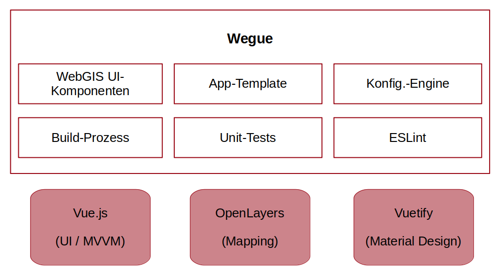
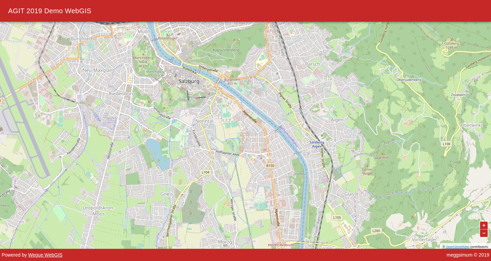
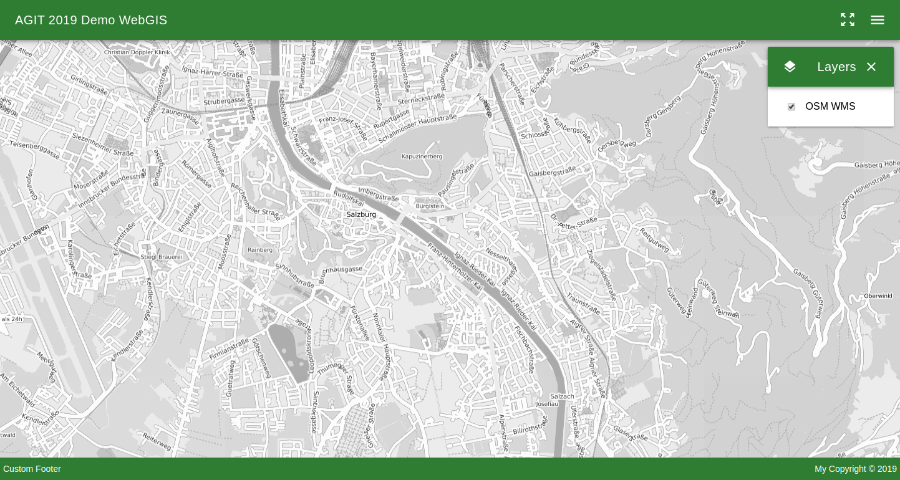
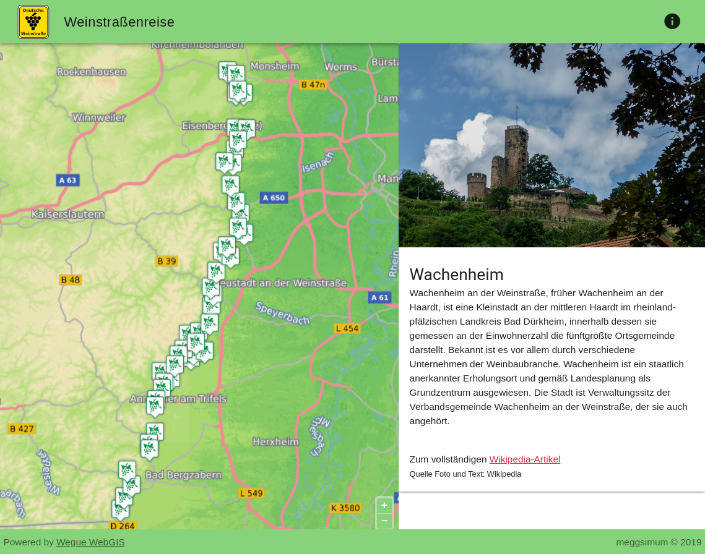

Wegue
OpenLayers und Vue.js in der Praxis
Christian Mayer
meggsimum - Büro für Geoinformatik
AGIT 2019, Salzburg, 03.07.2019
Gliederung
- Über…
- Das Wegue Projekt
- Neuerungen
- Beispiele aus der Praxis
Christian Mayer

- Dipl.-Ing. Geoinform. & Verm.
- Softwareentwickler & -architekt
- ❤ Open Source
- GeoExt, Wegue, GeoStyler, OpenLayers...
- Sprecher & Trainer
national & international - OSGeo Foundation Charter Member
meggsimum
- meggsimum.de
- Mutterstadt / Pfalz (D)
- Dienstleistungen im Bereich GIS, Webmapping & GDI
- Softwarekonzepte und Softwareentwicklung
- Beratung und Schulung
Wegue
- Template für leichtgewichtigen WebGIS-Client-Anwendungen
- Kombiniert Vue.js und OpenLayers
- Wiederverwendbare WebGIS-UI-Komponenten
- Konfigurierbar mittels JSON
- Beliebiger JavaScript-Code ergänzbar
- Lizenz: BSD-2-Clause
- Code (github)
Vue.js
- Clientseitiges JavaScript-Webframework (MVVM)
- Flexibel einsetzbar (Standalone & Embedded)
- Einfache API, leicht zu erlernen
- Mächtige Template-Engine
- Projektstruktur ohne zu viele Einschränkungen
- Two-Way-Binding, Direktiven, (vererbbare) Komponenten, ...
- Lizenz: MIT
OpenLayers
A high-performance, feature-packed library for all your mapping needs.
- JavaScript Mapping-Bibliothek
- OSGeo Projekt
- Viele Daten- & Layerquellen, Interaktionen & Steuerelemente, ...
- Lizenz: BSD
Wegue Architektur
Komponenten
- Layer-Liste
- Messwerkzeuge für Strecken und Flächen
- Selektionswerkzeug für Vektordaten
- Hover Tooltip f. Vektordaten
- Attributanzeige
- Koordinatenanzeige
- Toolbar zur Platzierung von Werkzeugen
- Hilfe-Fenster zur Bereitstellung von Hilfetexten
- Layer Loading GIF
- ...
Neuerungen v1.0.0 (WIP)
- Trennung von Core-Code und App-Code
- Flexiblere Nutzung
- Verbesserte Updatefähigkeit
- Mehr Hooks für eigene Code Erweiterung
- Dynamische Konfiguration per URL-Parameter
- Vektor-Styling über Konfiguration
- Verbesserte Testabdeckung (> 80%)
- Upgrade auf neueste Basis-Bibliotheken
WebGIS-App (Einfach)
{
"title": "AGIT 2019 Demo WebGIS",
"mapZoom": 14,
"mapCenter": [1453914, 6071774],
"mapLayers": [
{
"type": "OSM",
"lid": "osm-bg",
"visible": true
}
]
}
WebGIS-App (Einfach)
WebGIS-App (Erweitert)
{
"title": "AGIT 2019 Demo WebGIS",
"baseColor": "green darken-3",
"logo": "https://dummyimage.com/100x100/383/fff&text=Wegue",
"logoSize": "100",
"mapZoom": 14,
"mapCenter": [1453914, 6071774],
"mapLayers": [
{
"type": "WMS",
"lid": "terrestris-osm-wms",
"name": "OSM WMS",
"format": "image/png",
"url": "http://ows.terrestris.de/osm-gray/service",
"layers": "OSM-WMS",
"projection": "EPSG:3857",
"attributions": "© OpenStreetMap-Mitwirkende"
}
],
"modules": {
"wgu-zoomtomaxextent": {
"target": "toolbar",
"darkLayout": true
},
"wgu-layerlist": {
"target": "menu",
"win": true,
"draggable": false
}
}
}
WebGIS-App (Erweitert)
WebGIS-App (dynamisch)
Konfig Über URL-Parameter appCtx
https://meggsimum.github.io/wegue/
vs.
https://meggsimum.github.io/wegue/?appCtx=minimal
WebGIS-App Template
src/src/WguAppTemplate.vue erweitern in
app/WguApp.vue
WebGIS-App Template
Beispiele aus der Praxis
Ausblick
- Upgrade OpenLayers v6.0.0 (vorbereitet)
- Docker-Image (WIP)
- GUI / Anwendung zur Erzeugung App-Konfig
- Herauslösung der UI-Komponenten als Bibliothek?
- Verbesserung Dokumentation & HowTo / Get Started
- Community aufbauen
Vielen Dank
Fragen & Anmerkungen?
Impressum
Autor
Christian Mayer
meggsimum ‐ Büro für Geoinformatik
Schillerstraße 2a
67112 Mutterstadt
info@meggsimum.de
meggsimum ‐ Büro für Geoinformatik
Schillerstraße 2a
67112 Mutterstadt
info@meggsimum.de
Lizenz
Diese Folien sind unter CC BY-SA veröffentlicht.